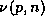
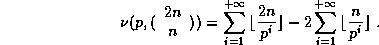

Computation of the n'th digit of pi in any base in O(n^2)
Fabrice Bellard
This article is an alpha version. Please send any comments to Fabrice.Bellard@enst.fr
Simon Plouffe explained in [1] a new algorithm to compute the
n'th digit of  and some other mathematical constants in any base with
very little memory. Its running time is . We
present here an improvement of this algorithm whose running time is
and some other mathematical constants in any base with
very little memory. Its running time is . We
present here an improvement of this algorithm whose running time is
 while its memory requirements stay
while its memory requirements stay  , which makes it
practical to compute the millionth digit of for example.
, which makes it
practical to compute the millionth digit of for example.
We want to compute the n'th digit in base B of s, where
Let ,  and
. We have
and
. We have
with the Chinese remainder theorem. Hence
The 'th digits of s, where , are the digits in base B of
With the last formula we have
As shown in [1], this equality is interesting because each term
can be computed separatly, with a total memory of if we already
know b and .
We want now to compute the n'th digit in base B of , where
with

With the first result we have
where
with
and
The key observation is that we can use for all the same
modulo, hence
This can be rewritten
To have the digits after the n'th one, in base B, we compute

The running time is and the memory requirements stay
 if we suppose that:
if we suppose that:
- , , , and are given.
- for every i. We suppose that M fits in
a computer word so that each operation takes a time of
 except the
modulo inversion which takes a time of
except the
modulo inversion which takes a time of  .
.
-
 is small so an exponentiation by it takes a time of
is small so an exponentiation by it takes a time of  .
.
Given
we can use the result of section 2 because if p is a
prime number, we notice that
where  is the multiplicity of
p in n. It comes from the relation

Hence, if we want the n'th digit of  in base B, we may use the
following algorithm:
in base B, we may use the
following algorithm:
- where
is a small integer to ensure we have the precision needed
; .
- For each prime number a with 2 < a < 2N, do:
-
 ;
.
;
.
-
;
;
;
.
- for k in do:
-
 ;
.
;
.
- If we suppose that , then, if we
neglect rounding errors,
. The number q of
correct digits depends on
 .
.
The running time is  because there are
prime numbers between 2 and 2n . The memory requirements are, as
expected, in
because there are
prime numbers between 2 and 2n . The memory requirements are, as
expected, in  .
.
We have presented an algorithm to compute the n'th digit in any base B of
 whose running time is . It has the same running time as other
classical methods for computing
whose running time is . It has the same running time as other
classical methods for computing  (e.g. arctangent formulas), but it
uses little memory, it is very simple and does not need high precision
computations. It is still slower than the BBP algorithm [2], but it
works in any base. As described in [1], the same algorithm may
be used to compute other numbers such as , , ,
and .
(e.g. arctangent formulas), but it
uses little memory, it is very simple and does not need high precision
computations. It is still slower than the BBP algorithm [2], but it
works in any base. As described in [1], the same algorithm may
be used to compute other numbers such as , , ,
and .
References
- 1
- Simon Plouffe, On the computation of the n'th
decimal digit of various transcendental numbers, November 1996.
- 2
- David H. Bailey, Peter B. Borwein and
Simon Plouffe, On the Rapid Computation of Various Polylogarithmic
Constants, April 1997 in Mathematics of Computation.
Sun Jan 12 22:34:36 MET 1997
Fabrice Bellard (
http://bellard.org/ )